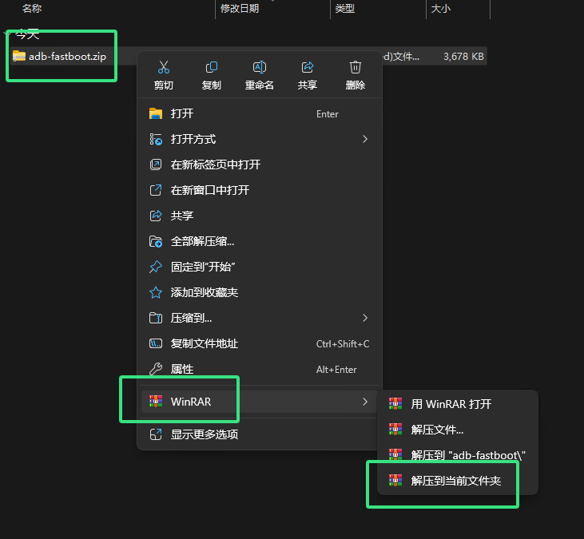
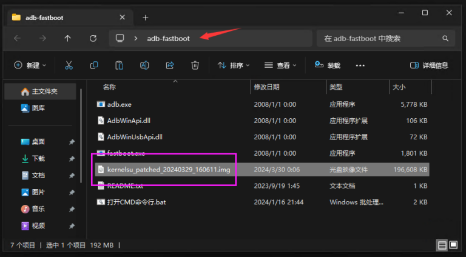

KernelSU 新手入门：什么是内核级 Root，五分钟装上去先玩起来
第一次听说 KernelSU？这篇从完全不懂开始，用生活化的类比讲清它跟传统 Root 的区别，带你走完解锁引导、刷入补丁、首次授权的最短路径，再挑三个新手最该先碰的功能逐一演示。
这篇能带你从完全不懂 KernelSU 到亲手把它装到手机上、给第一个应用授权，全程不需要任何 Root 前置知识——只要你敢解锁手机引导程序，跟着做就行。
它到底是干嘛的：一个生活化类比讲明白
你手机上跑的每一个 App 都像公司里的普通员工，平时只能坐自己的工位、用自己的电脑。传统 Root（比如几年前常见的 Magisk）相当于给每个员工配了一把万能钥匙——想开哪个工位都行，想动哪台电脑都能动。这当然方便，但也意味着只要有一个员工被坏人忽悠了，整个公司的资料就可能被搬空。
KernelSU 干的事情不一样。它不直接给你万能钥匙，而是在公司的前台安排了一个保安大叔——这个大叔就坐在前台（也就是 Linux 内核里），你想进哪个门、想碰什么东西，得先在他那里登记，他再决定放不放你过去。保安大叔本人握有最高权限，但他不会主动开门，只会按你登记的内容来。想进一步了解它的来龙去脉，可以去它的kernelsu官网上看看官方介绍。
这就是它跟传统 Root 方案最本质的区别：传统方案给你一把全开的钥匙，KernelSU 给你一张可以自定义权限的门禁卡。你可以选择只给某个 App 读文件的权限、不给它装东西的权限；也可以选择让另一个 App 拥有完整的控制权。所有权限判断都在内核层强制执行，不会被任何应用偷偷绕过。
说人话就是：KernelSU 让你对每个 App 能做什么、不能做什么说了真算，而不是一刀切地给所有人全开或者全关。
五分钟上手：从下载安装到第一次跑通的最短路径
好消息是，KernelSU 的安装流程跟你刷过的任何一个 Magisk 模块差不太多。只要你的手机内核版本在 5.10 以上（大致对应出厂 Android 12 之后的 GKI 设备）、引导程序（bootloader）已经解锁，整个过程大概花五分钟。
第一步：准备工作
先把手机连上电脑，打开开发者选项里的 USB 调试开关。电脑上装好 adb 和 fastboot 工具，然后用数据线接手机，在命令行敲一下 adb devices，看到设备序列号说明连上了。

第二步：解锁引导程序并进入 bootloader
用 adb reboot bootloader 把手机切到 bootloader 模式。不同品牌进入 bootloader 的组合键不一样，一般是同时按住音量减和电源键，屏幕上会出现一个躺在地上的 Android 小人机器人，上面写着 "Fastboot mode" 之类的字样。

第三步：下载内核补丁工具
KernelSU 官方提供了一个内核补丁工具——从kernelsu下载拿过来之后，你需要把它解压到一个单独的文件夹里，然后把你手机的 boot.img 也拷进去。boot.img 从哪来？要么从你手机当前正在用的系统固件里提取，要么去对应机型的官方固件页面下载。
第四步：打补丁、刷回去
运行补丁工具，选择刚才放好的 boot.img，工具会生成一个新的镜像文件，名字通常会带 patched 字样。然后用 fastboot flash boot patched_boot.img 把这个补丁镜像刷回手机。刷完之后 fastboot reboot 重启，系统起来之后你应该能在应用列表里看到一个 KernelSU 管理器的图标。

第五步：首次授权
打开 KernelSU 管理器，它会自己完成内核模块的加载。成功加载之后，界面上应该显示 "LKM working" 的绿色状态。

这时候你随便找一个需要 Root 的 App 试试——比如一个简单的文件管理器，进到它的 Root 功能里，KernelSU 会弹出一个请求窗口问你同不同意给权限。选「允许」，这个 App 就能拿到 Root 了。到这一步，你已经成功把 KernelSU 跑通了。
上手后先玩这三个功能：新手最值得先碰的点
装完 KernelSU 别急着给所有 App 全开 Root，先把下面三个功能玩一遍，你会对它的优势有直观感受。
第一个：给 App 精细化限权
打开 KernelSU 管理器，进到已授权的应用列表，点某个 App 的条目进入它的 Root Profile 配置页。你会看到三个关键选项：UID/GID、Capabilities（权能） 和 SELinux 域。
UID 这个选项决定了 App 执行 su 之后是以哪个用户身份运行的。默认是 0（也就是完整的 Root），你可以把它改成 10000 这种低权限用户，这样 App 虽然能调用 su，但实际上拿到的是一个普通用户的权限——它能干的事一下就少了一半。
Capabilities 更有意思：Linux 把 Root 的权限拆成了几十个可以单独开关的小单元，比如"绕过文件读取权限检查"是一个、"安装内核模块"是另一个。你可以保持 UID 为 0，但只勾上这个 App 真正需要的那两三个权能，其余全部关掉。这样 App 虽然看起来还是 Root，实际上它能做的事情被你限制在了一个小笼子里。
你会发现：很多声称需要 Root 的 App，其实只需要读几个系统文件、改几个配置项，根本用不上完整的 Root 权限。把多余的权能关掉，相当于给这些 App 装上了一个安全护栏。
第二个：模块系统
KernelSU 可以装 Magisk 风格的模块——Zip 包直接在管理器里刷，装到 /data/adb/modules 目录下，systemless 修改（不真的改系统分区，重启就清除）。模块格式跟 Magisk 几乎一模一样，熟悉 Magisk 模块的开发者几乎可以零成本迁移过来。
需要注意一个小差别：KernelSU 默认没有 Zygisk，想要的话需要另外装一个叫 ZygiskNext 的模块。另外模块不支持在 Recovery 里安装，只能在系统里通过管理器来装。
如果你之前刷过 Magisk 模块，这个功能对你来说就是无缝衔接——甚至连 BusyBox 的命令都完全一样，KernelSU 直接用的就是 Magisk 项目编译的 BusyBox 二进制。
第三个：元模块（metamodule）架构
这个功能可能是 KernelSU 最独特的一点。传统 Magisk 的 systemless 修改是直接在守护进程里挂载 overlay 到 /system 上的；KernelSU 把这个逻辑从核心里剥离出来，交给了一个叫「元模块」的可插拔基础设施。
最常用的元模块是 meta-overlayfs——你装上它之后，KernelSU 就能像 Magisk 那样对 /system 分区做无系统修改。但如果你不需要改系统分区，只想跑一些脚本类功能，你根本不需要装任何元模块，KernelSU 核心本身就能工作。
这个设计的好处是：核心更轻、更干净，你用不到的功能不会被塞进内核里跑着。对元模块的更多细节、挂载规则和实现原理感兴趣的话，去翻翻kernelsu文档里的专题章节，写得非常清楚。
小白的三个常见疑问
疑问一：KernelSU 和 Magisk 到底什么关系？我要不要把 Magisk 卸了？
官方明确说了：用户态的 Root 方案（也就是 Magisk 这类）已经做得很好了，KernelSU 不是来替代它们的，而是来给内核接口的。两者可以共存，甚至在某些场景下配合使用。
如果你只是想"有个 Root 用"，继续用 Magisk 完全没问题。但如果你想对每个 App 的权限做精细化控制、或者你需要内核级的系统调用拦截能力——这些是用户态方案做不到的，这时候 KernelSU 就能派上用场了。
疑问二：我的手机不是 GKI 设备，还能用 KernelSU 吗？
老一些的非 GKI 设备（大致是出厂 Android 11 之前的）内核结构不一样，KernelSU 官方没有直接支持这些机型。不过社区里有一些第三方适配的内核补丁，你可以在机型对应的论坛里搜一下。如果搜不到，老老实实回去用 Magisk 就行。
疑问三：SELinux 那个自定义域是什么鬼？我要配置吗？
SELinux 是 Android 系统里的强制访问控制机制——它按"默认拒绝"原则运行，任何没被明确允许的操作都会被拦截。KernelSU 里默认会给每个 su 进程分配一个不受限制的域，如果你想更严格，可以自己定义 SELinux 规则。
不过对于新手来说，你完全可以先不管这个。默认配置已经够用了，等你哪天发现某个 App 明明拿到了 Root 但就是做不了某件事（SELinux 把它拦了），再回来研究也不迟。SELinux 规则写错了反而可能把自己锁死，所以不急。
总结一下
KernelSU 给你的不是一把万能钥匙，而是一套可以精细控制的门禁系统。装它不难，五分钟就能跑通；玩好它的三个核心功能——精细化限权、模块系统、元模块架构——你会发现原来 Root 还能这么灵活。
下一步如果你想深入，那里有完整的模块开发指南、Capabilities 权能清单和 SELinux 规则写法。写模块的话，跟 Magisk 差别很小，补上那几个差异点（比如用 KSU 变量判断环境、没有内置 Zygisk）就能上手了。这些技术文档我也同步备份到了三个代码仓库里方便大家查阅：GitHub、Gitee 和 GitCode。